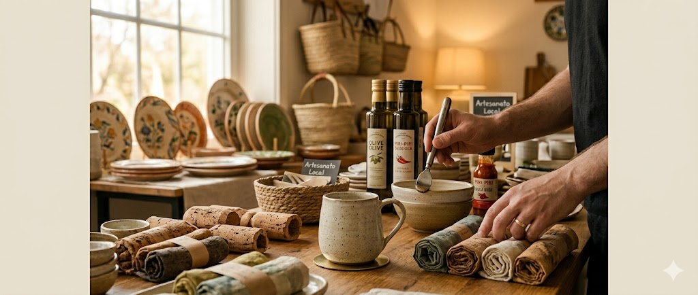

Arte & Charme

Boas-Vindas
Na Arte & charme, cada peça é feita à mão com cuidado e dedicação, transformando arte em algo único.
Glossário de Artesanato
-
Artesanato
-
Produção manual deeças únicas ou em pequena escala, feitas com cuidado, criatividade e técnicas tradicionais
ou modernas.
-
Peça artesanal
-
Produto feito à mão, que pode apresentar pequenas variações — o que a torna exclusiva e especial.
-
Ponto cruz
-
Técnica de bordado em que os pontos formam pequenos “X” sobre o tecido, criando desenhos delicados e
detalhados.
-
Macramê
-
Arte de criar peças decorativas ou utilitárias usando nós feitos manualmente com fios ou cordas, sem o uso
de agulhas ou máquinas.